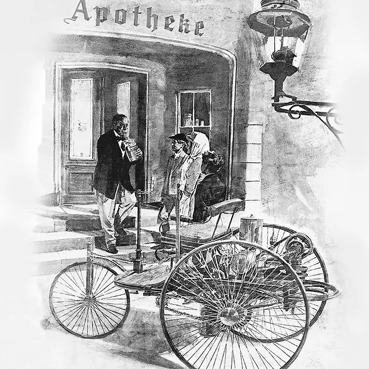

On January 29, 1886, Carl Benz applied for a patent for his “vehicle powered by a gas engine.” The patent – number 37435 – may be regarded as the birth certificate of the automobile. In July 1886 the newspapers reported on the first public outing of the three-wheeled Benz Patent Motor Car, model no. 1. Using an improved version and without her husband’s knowledge, Benz’s wife Bertha and their two sons Eugen (15) and Richard (14) embarked on the first long-distance journey in automotive history on an August day in 1888. The route included a few detours and took them from Mannheim to Pforzheim, her place of birth. With this journey of 180 kilometers including the return trip Bertha Benz demonstrated the practicality of the motor vehicle to the entire world. Without her daring – and that of her sons – and the decisive stimuli that resulted from it, the subsequent growth of Benz & Cie. in Mannheim to become the world’s largest automobile plant of its day would have been unthinkable
t was Carl Benz who had the double-pivot steering system patented in 1893, thereby solving one of the most urgent problems of the automobile. The first Benz with this steering system was the three-hp (2.2-kW) Victoria in 1893, of which slightly larger numbers with different bodies were built. The world’s first production car with some 1200 units built was the Benz Velo of 1894, a lightweight, durable and inexpensive compact car. 1897 saw the development of the “twin engine” consisting of two horizontal single-cylinder units in parallel, however this proved unsatisfactory. It was immediately followed by a better design, the “contra engine” in which the cylinders were arranged opposite each other. This was the birth of the horizontally-opposed piston engine. Always installed at the rear by Benz until 1900, this unit generated up to 16 hp (12 kW) in various versions.
Using an improved version and without her husband’s knowledge, Benz’s wife Bertha and their two sons Eugen (15) and Richard (14) embarked on the first long- distance journey in automotive history on an August day in 1888. The route included a few detours and took them from Mannheim to Pforzheim, her place of birth. With this journey of 180 kilometers including the return trip Bertha Benz demonstrated the practicality of the motor vehicle to the entire world. Without her daring – and that of her sons – and the decisive stimuli that resulted from it, the subsequent growth of Benz & Cie. in Mannheim to become the world’s largest automobile plant of its day would have been unthinkable.